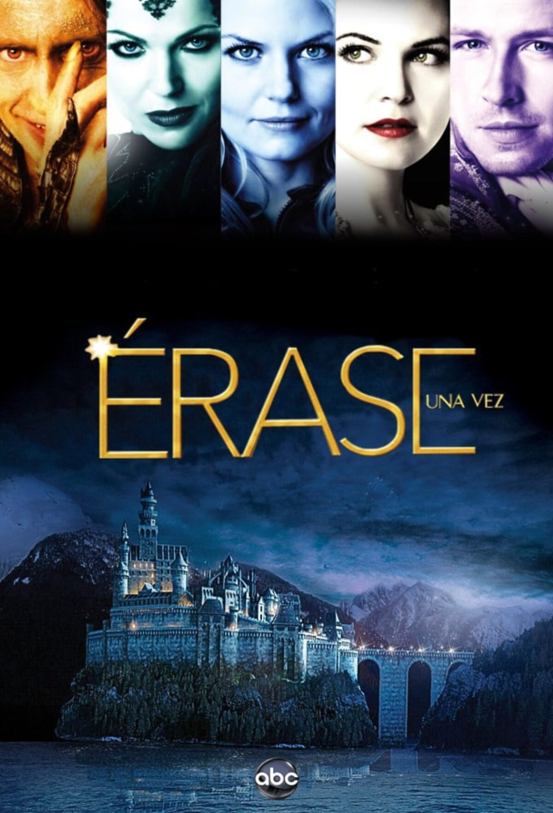

.jpg)
la caracterísitica principal que el personaje mira a la cámara a la pantalla
es algo metafórico, el personaje decide . Cocurrió en el siglo XIX, viene del teatro donde continuamente se le estaba hablando a la gente, gracias a este recurso creamos un momento de conección con espectador, entramos a un nivel más personal y el espectador se involucra en la acción, se hace mucho en las series después de los años 60. Si lo haces tú que sea algo novedoso. se debe utilizar un primer plano. las consecuencias se hacerlo mal este recurso es que sacas al espectador de la historia.
Donde se puede utilizar:
Rompe los límites de la escritura convencional, la academica, la periodística, los chiclçes de la escritura, a través de esto va a ser más importante la imaginación del autor que la información literaria, se necesita conocer os recursos narrativos previos, y los recuros estilísticos, recursos físicos: diccionario, internet, un espacio de trabajo adecuado que esté organizado. post-its
Esto consiste en poner un folio y escribir simepre las mismas preguntas,
Son los llamados cuentos etiológicos y están en todo tipo de culturas. intentan dar explicación de por qué el mundo es el mundo, o porqué existe Dios, porqué el agua del mar es salada? porqué un ovni siempre sale desenfocado, porqué los fantasmas mueven cosas en vez de moverte a ti
Periodista, maestro y pedagogo; decía que una sola palabra no inspira una chispa mínimo se necesitan dos palabras, deben de ser al azar, LUNA - VIOLETA, el violata sobre la luna, el violeta de la luna, la luna en el violeta, violeta con la luna, luna desde violeta.
Se empieza con cuentos clásico y se hace una mezcla con cierta lógica,
 campanilla - caperucita roja.después de asesinar al lobo caperucita recibe la visita de campanilla quien está maravillada por su gran asaña así que la invita al pais de nunca jamás, donde juntas van a formar una agrupación de lucha contra abusones de cuento de adas, pero pronto se va a revelar que esta campanilla era una timadora que le había tendido una trampa a caperucita y en realidad era un esbirro que había contratado la jauría de lobos familiar del lobo difunto.